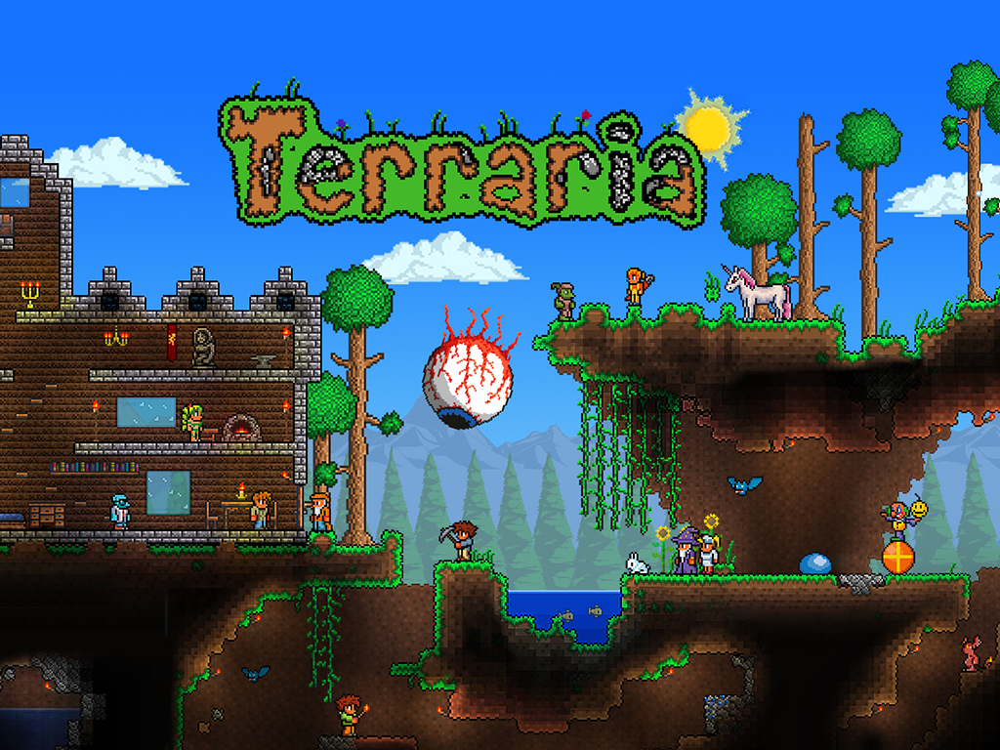

Dig, Fight, Explore, Build: The very world is at your fingertips as you fight for survival, fortune, and glory. Will you delve deep into cavernous expanses in search of treasure and raw materials with which to craft ever-evolving gear, machinery, and aesthetics? Perhaps you will choose instead to seek out ever-greater foes to test your mettle in combat? Maybe you will decide to construct your own city to house the host of mysterious allies you may encounter along your travels?
In the World of Terraria, the choice is yours!
Blending elements of classic action games with the freedom of sandbox-style creativity, Terraria is a unique gaming experience where both the journey and the destination are completely in the player’s control. The Terraria adventure is truly as unique as the players themselves!
Are you up for the monumental task of exploring, creating, and defending a world of your own?
But beware, there are even more challenges awaiting you... Are you up to the task:
lets look at some of the features in this game:
Tools and Weapons!:
varios tools and weapons ranging from a copper pickaxe and sword to flaming pickaxes and magical green swords taller than 3 people!
Npc's!:
ranges of npcs coming from a humble human that gives advice to a blue goblin that gives trinkets like rocket boots!
Bosses!:
face all new inventive bosses from a floating eye to a evil moon god